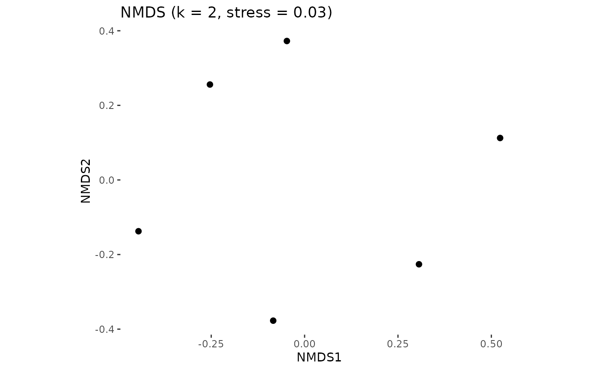

This is a wrapper around the monoMDS function in the vegan package.
glottonmds(glottodist = NULL, k = NULL, na.rm = FALSE, row2id = NULL)a glottonmds object which can be plotted using glottoplot(glottonmds = ). See ?monoMDS for more details.
glottodata <- glottoget("demodata", meta = TRUE)
glottodist <- glottodist(glottodata = glottodata)
glottonmds <- glottonmds(glottodist, k = 2, row2id = "glottocode")
#> Run 0 stress 0.02803925
#> Run 1 stress 0.1422318
#> Run 2 stress 0.202923
#> Run 3 stress 0.1449615
#> Run 4 stress 0.02803925
#> ... New best solution
#> ... Procrustes: rmse 6.946243e-07 max resid 1.284298e-06
#> ... Similar to previous best
#> Run 5 stress 0.05028499
#> Run 6 stress 0.1422318
#> Run 7 stress 0.02803925
#> ... Procrustes: rmse 1.069757e-06 max resid 1.815857e-06
#> ... Similar to previous best
#> Run 8 stress 0.1422318
#> Run 9 stress 0.202923
#> Run 10 stress 0.1728752
#> Run 11 stress 0.05028499
#> Run 12 stress 0.05028499
#> Run 13 stress 0.1422318
#> Run 14 stress 0.1422318
#> Run 15 stress 0.02803925
#> ... Procrustes: rmse 1.326343e-06 max resid 2.157954e-06
#> ... Similar to previous best
#> Run 16 stress 0.1422318
#> Run 17 stress 0.1230201
#> Run 18 stress 0.05028499
#> Run 19 stress 0.05028499
#> Run 20 stress 0.1422318
#> *** Best solution repeated 3 times
glottoplot(glottonmds = glottonmds)
